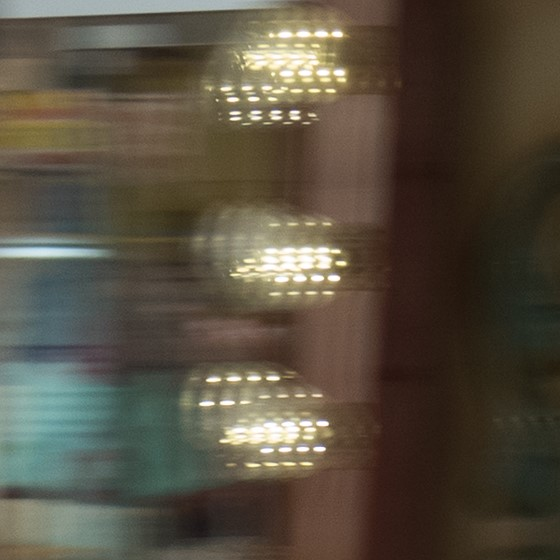
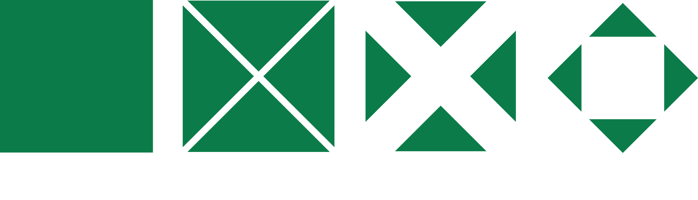
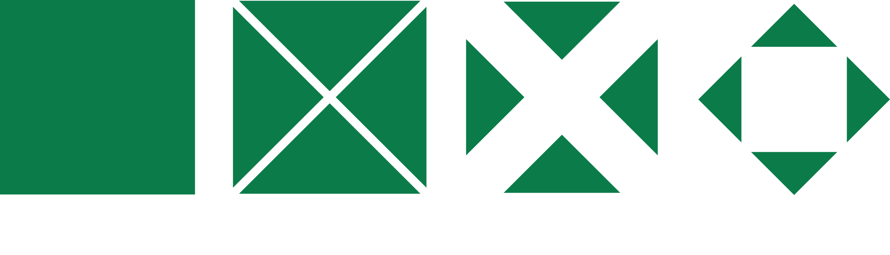

Percepção Visual#
Prof. Gustavo Oliveira
CI/DCC/UFPB
Introdução#
Humanos captam 70% da informação pela visão e 30% pelos demais receptores sensoriais (audição, olfato, paladar e tato);
Saber sobre a mecânica da visão é útil para construir RVs melhores
Insight, iluminação e esclarecimento, são conceitos relacionados à visão
Dão sentido de recebimento de informação
Trazem descrições apuradas sobre algo
Percepção visual e visualização de dados são assuntos vinculados
A mecânica da visão#
Dividida em dois estágios principais:
Sensação (processo físico): ocorre quando nossos olhos são estimulados por um objeto emissor ou refletor de luz.
Percepção (processo cognitivo): ocorre com a entrada de luz pelos olhos
Absorção por células nervosas;
Tradução dos sinais neurais (pulsos eletroquímicos)
Transmissão para o cérebro, tornando aquilo que foi sentido torna-se percebido
{kind=link}
Fóvea: reconhecimento de espectros de cor (vermelho, azul ou verde) e onde a acuidade visual é máxima.
Capaz de focar em apenas uma área limitada durante um intervalo de tempo.
Olhos fixados em um ponto particular / eventos não percebidos pelo campo de visão.
RVs abarrotadas de cores e elementos dispersam os olhos do espectador e atrapalham o foco
Tipos de memória#
A neurologia hoje reconhece várias memórias (episódica, semântica, icônica (MI), háptica, entre outras)
Quanto à temporalidade, duas classes importantes:
memória de curto prazo (MCP)
memória de longo prazo (MLP)
Informação recebida pelos olhos roteada pelo nervo óptico para a MI (registro sensorial)
Informação permanece na MI (< 1s) antes de passar para a MCP.
MCP similar à memória RAM (temporária e limitada)
Cérebro lida com pedaços da informação visual (parte armazenada; parte esquecida)
Equilíbrio de estímulos#
Trabalhar com RVs é equilibrar estímulos para a recepção da informação ser absorvida adequadaemente
Lado negativo é a “exploração” visual através do marketing coercitivo (máxima atratividade).
A finalidade do projeto visual dará a direção a ser seguida, mas sempre a audiência deve ter sua cognição minimamente respeitada
Percepção não controlada#
Percepção não controlada (pre-attentive perception) refere-se a propriedades visuais detectadas rapidamente (em frações de segundo) antes do processo da percepção propriamente dita.
Manifesta-se durante a identificação imediata de elementos visuais

Propriedades não controladas#
Podem ser postas em quatro categorias:
cor
formato
movimento
posição espacial
Quanto à cor#
Há três atributos principais, que definem o espaço primário de cores chamado de HSL
Atributo |
Descrição |
|---|---|
Matiz (Hue) |
Caracteriza o comprimento de onda dominante da cor (também chamado de tonalidade cromática) |
Saturação (Saturation) |
Medida de pureza da cor, isto é, a quantidade de luz branca |
Luminância (Lightness) |
Grau de brilho de uma imagem, em escala de branco a preto (também chamada de intensidade luminosa) |
{kind=link}
Quanto ao formato#
Há pelo menos dez atributos reconhecíveis
Atributo |
Exemplo |
|---|---|
Orientação |
Linha destacando-se de outras por ter orientação diferente |
Comprimento |
Gráfico com barras de comprimentos variáveis |
Largura |
Largura de uma linha usada para destaque |
Tamanho |
Tamanho de uma forma geométrica para destacar quantidade (elemento visual) |
Colinearidade |
Linhas paralelas |
Curvatura |
Contornos de formas |
Agrupamento |
Objetos dispostos em grupos (clusters) |
Marcações |
Anotações em objetos por meio de marcações |
Formato |
Triângulo entre quadrados |
Numerosidade |
Número de objetos (cardinalidade) em um grupo |
{kind=link}
Quanto à posição espacial#
Podemos detectar três atributos
Atributo |
Descrição |
|---|---|
Posição 2D |
Codifica dados quantitativos em representações visuais |
Profundidade estereoscópica |
Permite termos uma noção de profundidade espacial em uma imagem plana (ver estereoscopia). |
Concavidade/convexidade |
Cria efeitos de superfície através de sombreamentos. |
Concavidade/convexidade#
Efeito produzido através de sombreamentos
{kind=link}
Quanto ao movimento#
Há dois atributos: flickering e motion.
Flickering pode ser abusivamente utilizado em páginas da internet. Quando monitores tremulam, alguns efeitos adversos aos olhos são cansaço, irritação e lacrimação.
Motion é a característica básica de deslocamento de objetos em tela.
Atributo |
Descrição |
|---|---|
Flickering |
Objetos “tremidos” em websites com forte apelo visual ou dashboards |
Motion |
Objetos em movimento. |
Flickering#
{kind=link}
{kind=link}
Combinação de atributos preattentive#
A combinação desses atributos (imagem, luminosidade, formaDificultam
{kind=link}
Percepção controlada#
A percepção controlada é consciente, sequencial, e lenta.
Dá-se pela procura de foco.
Para acentuar a diferença entre percepções, vejamos a figura abaixo.
Ambas as sequências de dígitos são idênticas.
1a. linha exige controle focal (percepção controlada)
2a. linha, não (percepção não controlada)
Show code cell source
import aux05a
Cegueira à mudança (change blindness)#
O fenômeno ocorre quando, visualmente, somos incapazes de notar mudanças sensíveis no ambiente quando reposicionamos nosso foco instantaneamente de um objeto para outro.
Moldes de um “jogo de 7 erros”.
.jpg)
Atribuição: Globe_and_high_court.jpg, WikiCantona, CC BY-SA 3.0, via Wikimedia Commons.
Relação entre adequabilidade de atributos e categoria de dados#
Varia de acordo com a categoria dos dados
Os símbolos
-,+e++, nesta ordem, significam adequação insuficiente, adequação limitada, adequação suficiente.
Categoria do atributo |
Atributo |
Quantitativo |
Qualitativo categórico |
Qualitativo não categórico |
|---|---|---|---|---|
Cor |
Matiz |
- |
- |
++ |
Cor |
Luminância |
+ |
++ |
- |
Forma |
Orientação |
+ |
+ |
- |
Forma |
Comprimento |
++ |
+ |
- |
Forma |
Largura |
+ |
+ |
- |
Forma |
Tamanho |
+ |
+ |
- |
Forma |
Colinearidade |
- |
- |
- |
Categoria do atributo |
Atributo |
Quantitativo |
Qualitativo categórico |
Qualitativo não categórico |
|---|---|---|---|---|
Forma |
Curvatura |
+ |
+ |
- |
Forma |
Agrupamento |
- |
- |
- |
Forma |
Marcações |
- |
- |
++ |
Forma |
Formato |
- |
- |
++ |
Forma |
Numerosidade |
++ |
++ |
- |
Posição |
Posição 2D |
++ |
++ |
+ |
Posição |
Profundidade estereoscópica |
- |
- |
- |
Posição |
Concavidade |
+ |
+ |
- |
Movimento |
Flickering |
- |
- |
+ |
Movimento |
Motion |
+ |
+ |
- |
Princípios da Gestalt#
Gestalt, palavra alemã que, em tradução aproximada, seria algo como “forma total”, é a alcunha de uma teoria também conhecida como psicologia da forma.
Explica que, como o ser humano enxerga o “todo” e não as “partes” do todo, aquilo que vemos é compreendido de forma diferente pela mente
Por esta razão, antes precisamos entender a totalidade, para então compreender a particularidade
A composição de elementos e formas induz concepções distintas daquilo que vemos
 

{kind=link}
Na primeira linha, o que vemos?
Ao analisar seus elementos, podemos ter diversas percepções.
Na primeira linha, o primeiro objeto é um mero quadrado;
O segundo é um quadrado “picotado” em quatro; (abajur; minka japonesa ?)
O terceiro é o mesmo quadrado picotado em quatro partes, porém com vãos largos (vemos apenas um “X”?);
O último é um quadrado inserido em outro (vemos um “losango circunscrito”?), porém girado.
{kind=link}
Na segunda linha, o que vemos?
O primeiro objeto representa um abajur? Uma minka (casa japonesa)?
O segundo objeto representa uma casinha com neve no telhado?
O terceiro uma casinha com janelas?
O último uma fábrica com chaminé?
Alguns ou todos esses conceitos podem ter passado à mente, mas percebemos que todos os elementos gráficos são apenas composições de triângulos e quadrados??
Esse efeito provocado pelas formas, que nos faz ver o todo e não as partes, à primeira vista, é o que a teoria da Gestalt explica. Os princípios da Gestalt são aplicados ao design até hoje para facilitar a comunicação das informações e, muitas vezes, de forma intuitiva.
6 princípios da Gestalt#
Figura/Fundo: o olho humano é capaz de distinguir entre o objeto núcleo e a área que o rodeia.
Continuidade: o olho humano é compelido a “seguir” o objeto, movendo-se do início dele ao fim.
Proximidade: quando dois objetos são postos juntos, o olho humano tende a percebê-los como um único grupo.
Similaridade: quando vários objetos tem aparência similar, o olho humano os percebe como um grupo ou padrão.
Fechamento: o olho humano tende a perceber um objeto “completo” ou “fechado”, mesmo quando é “incompleto” ou não perfeitamento “fechado”.
Simetria e ordem: também chamado de princípio da “boa figura” ou “pregnância” (do alemão prägnanz), manifesta-se quando o olho humano percebe formas ambíguas da maneira mais simples possível.
Aplicações dos princípios da Gestalt#